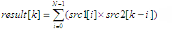

DSP_CONVOL
This API computes the convolution of two specified arrays.
The DSP_CONVOL API computes the convolution between src1 and src2 as follows:

k = 0, 1, ...., size2 - 1
where N is size1
For subscripts of src2 that are 0 or less, the elements of src2 are set as determined by circular_mode :
- circular_mode = OFF
src2[k-i] = 0
- circular_mode = ON
src2[k-i] = src2[k-i+m]
where m is size2.
This API is defined in the header file /opt/hp93000/soc/prod_com/include/MAPI/libdsp.h.
Syntax
DSP_CONVOL(ARRAY_I& src1, ARRAY_I& src2,
ARRAY_D& result, INT circular_mode);
DSP_CONVOL(INT *src1, INT *src2, DOUBLE *result,
INT size1, INT size2, INT circular_mode);
DSP_CONVOL(ARRAY_D& src1, ARRAY_D& src2,
ARRAY_D& result, INT circular_mode);
DSP_CONVOL(DOUBLE *src1, DOUBLE *src2,
DOUBLE *result, INT size1, INT size2,
INT circular_mode);I/O |
Parameter |
Description / Range |
|---|---|---|
I |
src1 |
Source array |
I |
src2 |
Source array |
O |
result |
Computed results (size of result) = size2 |
I |
size1 |
Number of elements in src1 array to be processed 1 ≤ size1 ≤ 2097152 size1 ≤ (size of src1) |
I |
size2 |
Size of src2 array 1 ≤ size2 ≤ 2097152 size2 = (size of src2) size2 = (size of result) |
I |
circular_mode |
Circular mode ON: On OFF: Off |
Example
int array1[100],array2[50]; double array3[50]; . . DSP_CONVOL(array1, array2, array3, 100, 50, OFF);
DSP_CONVOL computes the convolution between the arrays array1 and array2, and returns the results to the array array3.